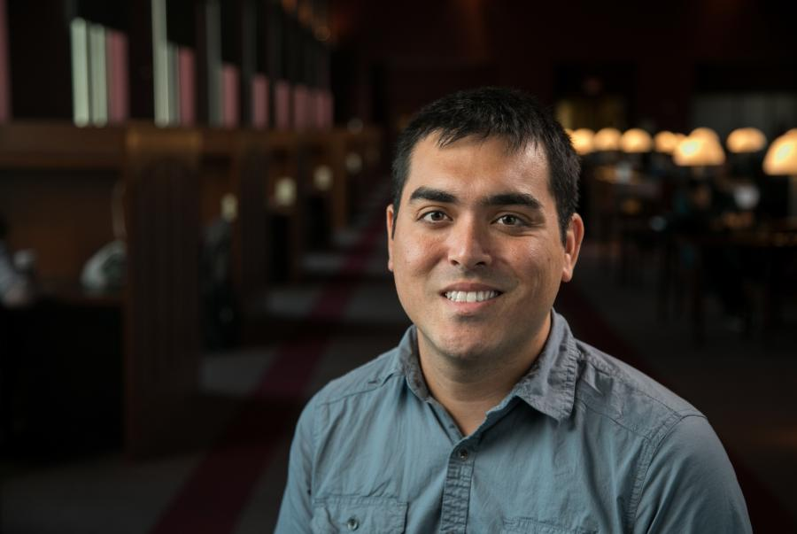
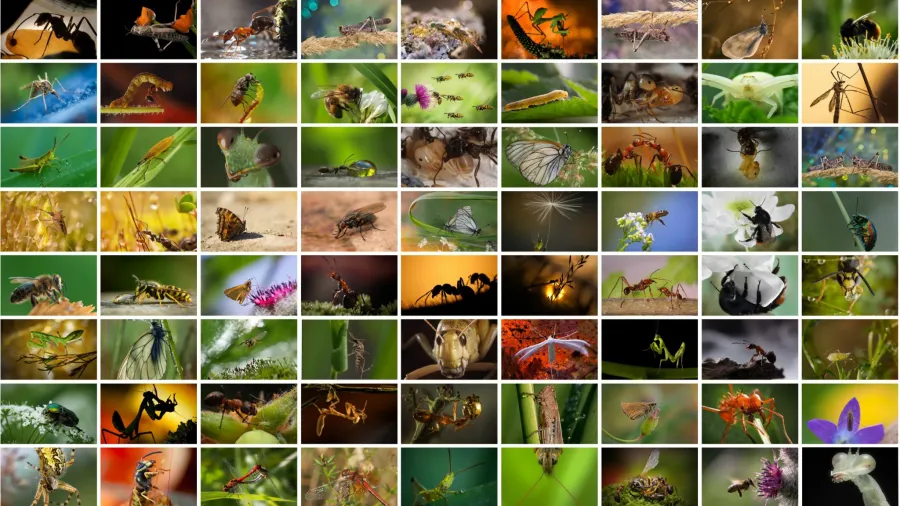

Dr. Josef Uyeda, an associate professor in the Department of Biological Sciences at Virginia Tech, is at the forefront of evolutionary biology research, delving into the mechanisms that drive long-term evolutionary change.
His research with Imageomics was recently featured in a new article by Communications of the ACM.
As a faculty affiliate with the Global Change Center, Uyeda’s work is pivotal in understanding how species adapt—or fail to adapt—to changing environmental conditions over millions of years.
The new article also features BioCLIP research. The model, the data, and the code of BioCLIP are freely available and everybody can experiment with a demo. Give the demo a photo of an organism, and it will predict its species name.

Uyeda’s research lab focuses on integrating process-based models of evolutionary and ecological change with phylogenetic trees, providing insights into the capacity of species to survive global environmental shifts. His expertise spans Phylogenetics, Bayesian modeling, and Statistical Quantitative Genetics, with a particular focus on reptiles and amphibians.
A significant part of Uyeda’s work aligns with the goals of Imageomics, an interdisciplinary field combining biology and AI to accelerate the discovery of new species and deepen our understanding of the natural world. His research in statistical methods and trait evolution is crucial for the Imageomics initiative, which aims to overcome the traditional bottlenecks in species identification and evolutionary study.
Uyeda, who earned his Ph.D. in Zoology from Oregon State University, also contributes to academia by teaching undergraduate and graduate courses in Evolutionary Biology and Macroevolution.
Read the full Communications of the ACM article at this link.